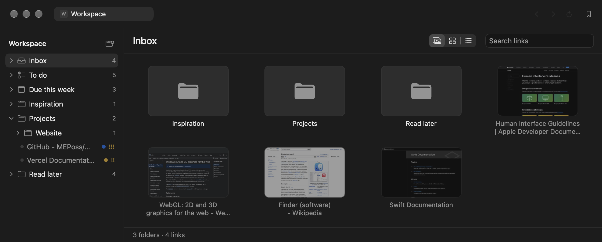
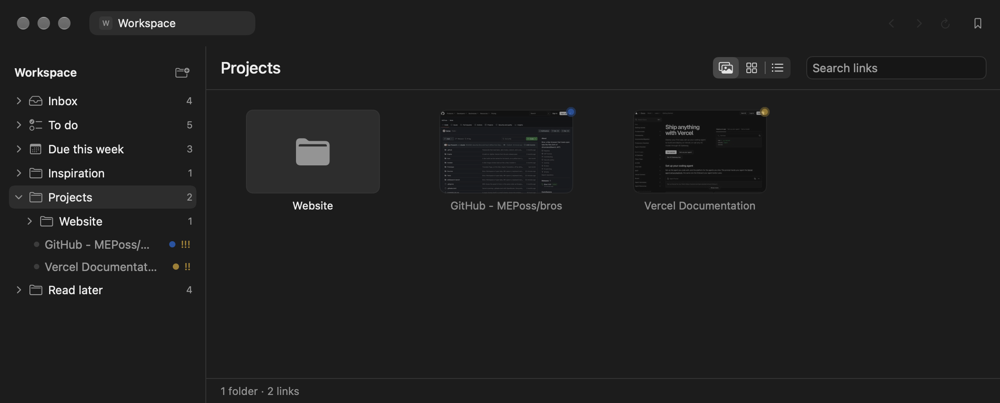
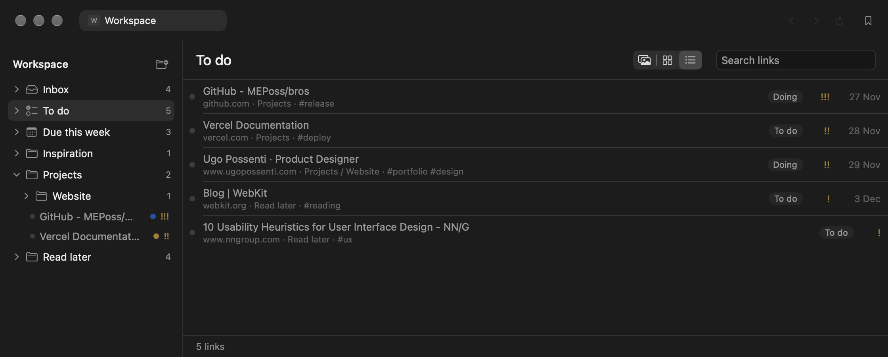
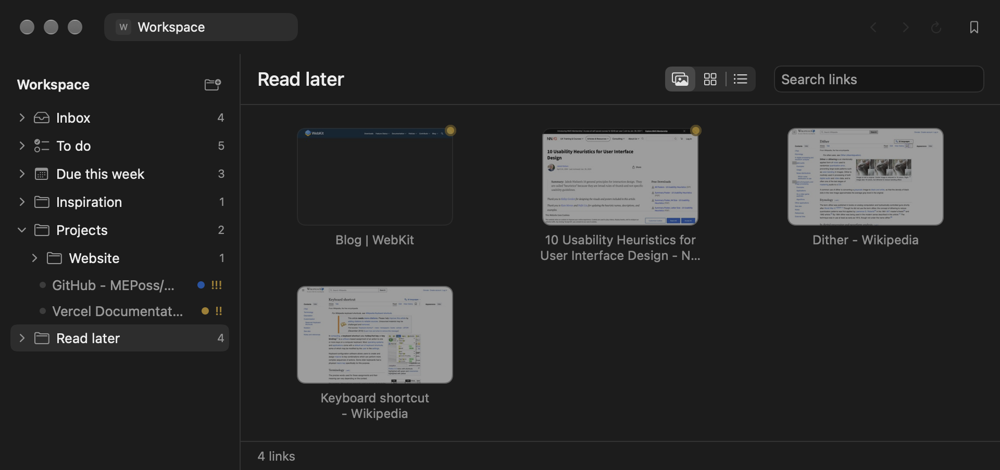
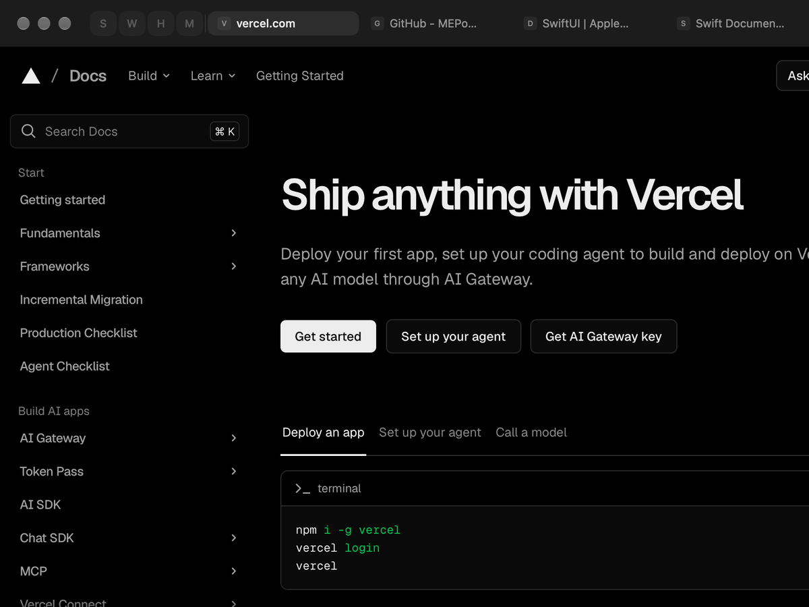
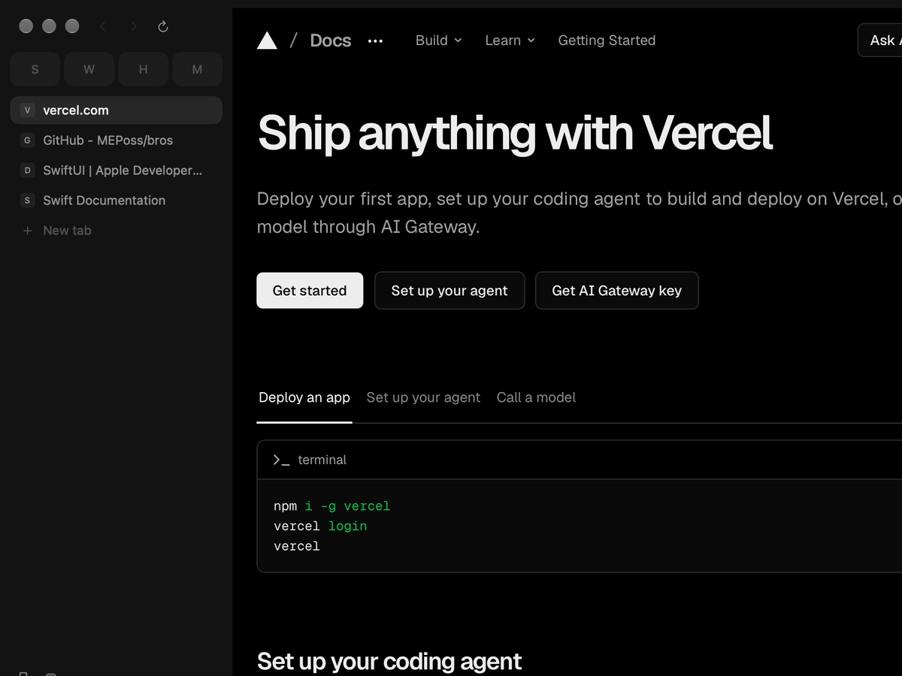
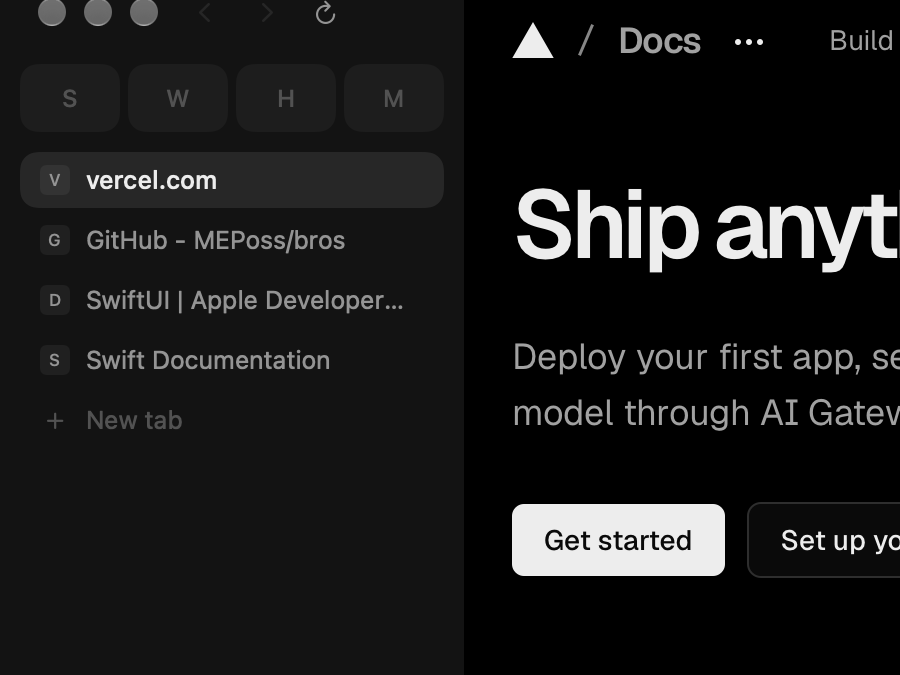

Le tue pagine aperte,
ordinate come file.
Your open pages,
sorted like files.
brOS è un browser per Mac che mostra le tab aperte come file in una finestra del Finder. Le sposti in cartelle, le segni, le ritrovi. brOS is a Mac browser that shows your open tabs like files in a Finder window. Move them into folders, mark them, find them again.

Il WorkspaceThe Workspace
Un browser che tiene in ordine quello che apri. A browser that keeps what you open in order.
Una vista delle tab, non dei segnalibriA view of your tabs, not your bookmarks
Premi ⌘K e vedi le pagine che hai aperto. Una pagina nuova finisce da sola nella Inbox, senza che tu debba salvarla. Le sezioni sono Inbox, To do, Due this week e le tue cartelle, annidate quanto vuoi. Press ⌘K and see the pages you have open. A new page lands in the Inbox by itself, with nothing to save. The sections are Inbox, To do, Due this week and your own folders, nested as deep as you like.

placeholder · assets/sections.pngOgni link è un fileEvery link is a file
Ogni link ha stato, priorità, scadenza, tag e note. Trascini i link sulle cartelle. Selezioni più link come nel Finder (clic, ⌘, ⇧ o un rettangolo) e con “Crea cartella da selezione” li raccogli in un colpo. Alle cartelle puoi dare un’icona (tasto destro › Icona, tra trenta), e il campo sopra l’albero cerca tra cartelle e link. Every link has a status, a priority, a due date, tags and notes. Drag links onto folders. Select several as in the Finder (click, ⌘, ⇧ or a rubber band) and use “Create Folder from Selection” to gather them at once. Give folders an icon (right-click › Icon, one of thirty), and the field above the tree searches folders and links.

placeholder · assets/details.pngTre modi di guardarliThree ways to look at them
Icone, lista, snapshot. Nello snapshot ogni tessera è la foto della pagina come l’hai vista l’ultima volta, così riconosci subito quella che cerchi. Icons, list, snapshots. In snapshots, each tile is a picture of the page as you last saw it, so you spot the one you want at a glance.
 placeholder · assets/view-list.png
placeholder · assets/view-list.png

placeholder · assets/view-snapshot.pngTastieraKeyboard
Si usa senza toccare il mouse. Works without touching the mouse.
Le frecce semplici appartengono al Workspace finché non clicchi su una pagina, che restituisce la tastiera a lei. The plain arrow keys belong to the Workspace until you click on a page, which gives the keyboard back to it.
Apre il WorkspaceShow the Workspace
Workspace nella barra laterale, al posto delle tabWorkspace in the sidebar, in place of the tab column
Tieni il link nel Workspace anche dopo aver chiuso la tabKeep the link in the Workspace after its tab is closed
Pagina precedente o successiva. La lista gira in cerchio e funziona anche con il cursore nel campo di GooglePrevious or next page. The list goes round, and it works with the caret in Google’s search field
Sezione precedente o successivaPrevious or next section
Dentro il Workspace: ti muovi tra sezioni e link, apri e chiudi le cartelle. Invio apre la paginaInside the Workspace: move through sections and links, open and close folders. Return opens the page
Elimina i link selezionati o la cartella, con conferma. I link di una cartella eliminata vanno nella InboxDelete the selected links, or the folder, with a confirmation. A deleted folder’s links go to the Inbox
Le basiThe foundation
Sotto c’è Search: piccolo, veloce, silenzioso. Underneath is Search: small, fast, quiet.
brOS tiene tutto quello che fa Search e ci aggiunge il Workspace. Questo è il resto, in breve. brOS keeps everything Search does and adds the Workspace on top. Here is the rest, in short.
Due modi di tenerle.Two ways to hold them. Tab in alto o a lato, e un sito fissato diventa una lettera.Tabs across the top or down the side, and a pinned site becomes a letter.



Così leggero che ti dimentichi di averlo.Light enough to forget it’s there. Search misura avvio e memoria contro Chrome e Safari: metodo e dati sono sul loro sito.Search measures launch and memory against Chrome and Safari: the method and data are on their site.
Circa 14 MB.About 14 MB. Usa WebKit, il motore già dentro macOS: nessuna seconda copia di Chromium da scaricare e tenere in memoria.It runs on WebKit, the engine already inside macOS: no second copy of Chromium to download and keep in memory.
Si apre subito.Opens at once. Le tab dell’ultima sessione tornano all’istante e non costano nulla finché non ci clicchi.Tabs from your last session come back instantly and cost nothing until you click them.
Chiusa è chiusa.Closed means closed. Ogni pagina gira nel suo processo WebKit, come in Safari, e una tab chiusa sparisce davvero.Each page runs in its own WebKit process, as in Safari, and a tab you close is really gone.
Codice leggibile.Code you can read. Swift, senza dipendenze oltre quelle che Apple mette in macOS. Puoi leggerlo, compilarlo, correggerlo.Swift, with no dependencies beyond what Apple ships in macOS. You can read it, build it, fix it.
Tutto il resto, già dentro.Everything else, already in. Quello che Search fa, brOS lo fa.What Search does, brOS does.
Tab fissate.Pinned tabs. Una lettera in testa alla riga, o l’icona del sito.A letter at the head of the row, or the site’s icon.
Pubblicità fermata prima.Ads blocked early. Tracker e reti pubblicitarie si fermano a livello di rete, prima che la pagina si disegni. Si spegne per sito.Trackers and ad networks stop at the network level, before the page draws. Off per site if something breaks.
Nascondi quello che vuoi.Hide anything. ⇧⌘H e clicca un banner dei cookie o un overlay: sparisce e resta nascosto su quel sito.then click a cookie banner or an overlay: it goes, and stays hidden on that site.
Modalità lettura.Reading mode. ⇧⌘R riduce la pagina all’articolo.strips a page down to the article.
Video che ti segue.Floating video. ⇧⌘P porta il video in una piccola finestra sopra tutto, anche sopra altre app.lifts the video into a small window above everything, other apps included.
Password nel portachiavi.Passwords in your keychain. Le offre sotto il campo, senza compilare niente da sole. Importi da Chrome, Arc, Dia, Brave o Edge.Offered under the field, never filled on its own. Import from Chrome, Arc, Dia, Brave or Edge.
Spazi.Spaces. Gruppi separati di tab, ciascuno con la sua icona. Ci passi con Control+1–9.Separate sets of tabs, each with its own icon. Switch with Control+1–9.
Estensioni di Chrome.Chrome extensions. Dal Chrome Web Store con un link, su macOS 15.4 o successivo.From the Chrome Web Store with a link, on macOS 15.4 or later.
Tab private.Private tabs. ⇧⌘N Cookie propri e nessuna traccia alla chiusura.Their own cookies, and nothing left behind when closed.
Web Inspector.Web Inspector. Ispeziona elemento su qualsiasi pagina, con gli strumenti di WebKit.Inspect Element on any page, with WebKit’s own tools.
Sincronizzazione iCloud.iCloud sync. Opzionale: tab, preferiti e impostazioni nel tuo iCloud, cifrati end to end. Nessun server nostro.Optional: tabs, bookmarks and settings in your own iCloud, end to end encrypted. No server of ours.
Open source.Open source. Il codice è su GitHub, con licenza MIT: leggilo, compilalo o mandaci una correzione.The code is on GitHub, MIT licensed: read it, build it, or send a fix.
InstallazioneInstall
Tre passaggi.Three steps.
- 1
Scarica
Bros.dmge trascina l’app in Applicazioni.DownloadBros.dmgand drag the app into Applications. - 2
La prima volta, clic con il tasto destro su Bros e scegli Apri.The first time, right-click Bros and choose Open.
- 3
Da quel momento si apre come ogni altra app.From then on it opens like any other app.
brOS non è ancora notarizzato da Apple: per questo macOS chiede conferma la prima volta. Non si aggiorna da solo: le nuove versioni si scaricano dalle Releases. brOS is not yet notarised by Apple, which is why macOS asks you to confirm the first time. It does not update itself: new versions are on the Releases page.